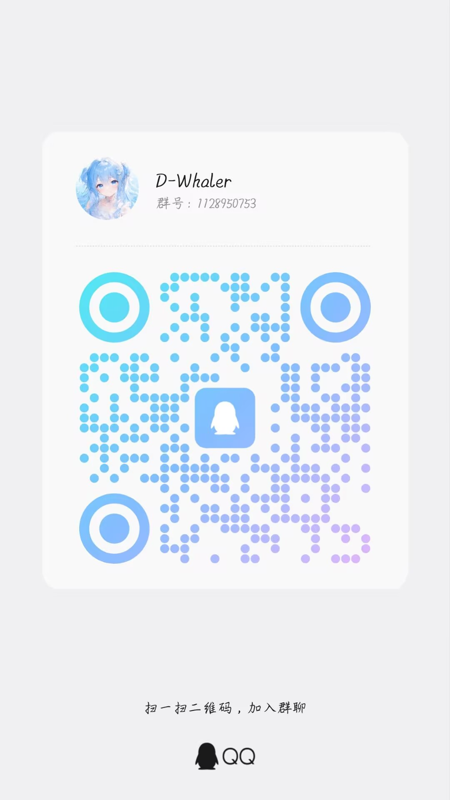

超星学习通学习辅助助手 · 把重复操作交给它，把时间留给自己
全部功能在页面右下角的一个面板内完成，不改动学习通本身。
接入 DeepSeek（deepseek-flash / deepseek-v4-pro），覆盖单选、多选、判断、填空等题型。答案按「字母索引 + 文本相似度」双通道定位回填，兼容 B、A,C、全角 Ｂ 等多种写法。
一遍答不出来自动重问，最多 3 遍；连续 3 遍都拿不到答案就跳过该题继续下一道，避免在单题上无限重试把整条流水线拖死。每次尝试都在状态页留痕。
倍速播放，并在检测到播放器停顿超过阈值时自动戳一下「重播 / 播放」。处于答题暂停状态的视频不会被抢播，触发时会留通知。
自动完成学习通内的文档与图书任务，章节作业可自动提交，并自动进入下一章节。脚本内部按 URL 路由判断，非目标页不会挂载面板。
自动还原学习通加密字体，复制与搜题不再是一堆乱码——这是刷题前最影响效率的一环。
实时显示请求数、token 数、预估花费与账户余额，并区分「本次」与「累计」两套口径——点「本次」格即可归零。计价区分高峰与空闲时段。
按累计花费分 5 档：初见 → 搭话 → 熟络 → 亲密 → 相伴。每跨一档多解锁 10 条语录，满级共 50 条，只在空闲时滚动播放。
悬浮胶囊 + 吸顶滚动双态、背景脉动光、双色随相呼吸光团。状态页日志自动贴底，但你自己往上翻时会主动让出滚动条。
推荐用脚本猫承载，可自动更新。
在 Edge / Chrome 应用商店安装 脚本猫 ScriptCat，也可用篡改猴 Tampermonkey。
打开仓库中的 D-Whaler.user.js 点击安装，或把文件直接拖进浏览器。脚本已配置自动更新地址，后续版本会自己跟进。
在 platform.deepseek.com 创建 sk- 开头的 API Key，粘贴到面板设置页并选择模型。不配也能用，只是不自动答题。
访问学习通课程页，右下角即出现助手面板。建议先在一门课上前小范围验证，再开启「自动提交 / 自动切换」批量运行。
chaoxing.com 与 3 个学校慕课平台，不是所有 edu.cn 都能用；
请勿同时启用多个脚本管理器并重复安装本脚本，以免双注入。
完整记录见仓库 CHANGELOG.md，以下为近期要点。
| 版本 | 要点 |
|---|---|
| v0.5.1 | AI 自动重问（最多 3 遍，连续失败跳过该题）；作答状态收口为已答 / 查询中 / 失败三态；视频卡顿自动重播并留通知；品牌更名 D-Whaler；@match 收窄为 4 个站点；补齐更新元数据支持自动更新。 |
| v0.4.13 | 花费显示精度统一（主显示两位小数，悬浮提示四位）；状态页日志自动贴底且不与用户抢滚动条；「其他」卡片从界面移除、参数写死。 |
| v0.4.12 | 修复「本次」用量归零失灵——根因是基线写在 sessionStorage，它在同一标签页跨刷新 / 关脚本重开都存活，改为内存变量。 |
| v0.4.11 | 界面大改版：液态玻璃悬浮胶囊、背景脉动光、好感度面板（累计花费分档解锁语录）。 |
| v0.4.0 | 面板宿主去重——修复新旧两份同时存在时旧面板压在新面板之上的问题，表现为「代码改了界面没变」。 |
遇到问题、想提建议、或者只想催更，都欢迎进群。

反馈 bug 时请尽量附上这几项，能让你少等一周：
使用本脚本即视为完全同意以下 6 项声明。